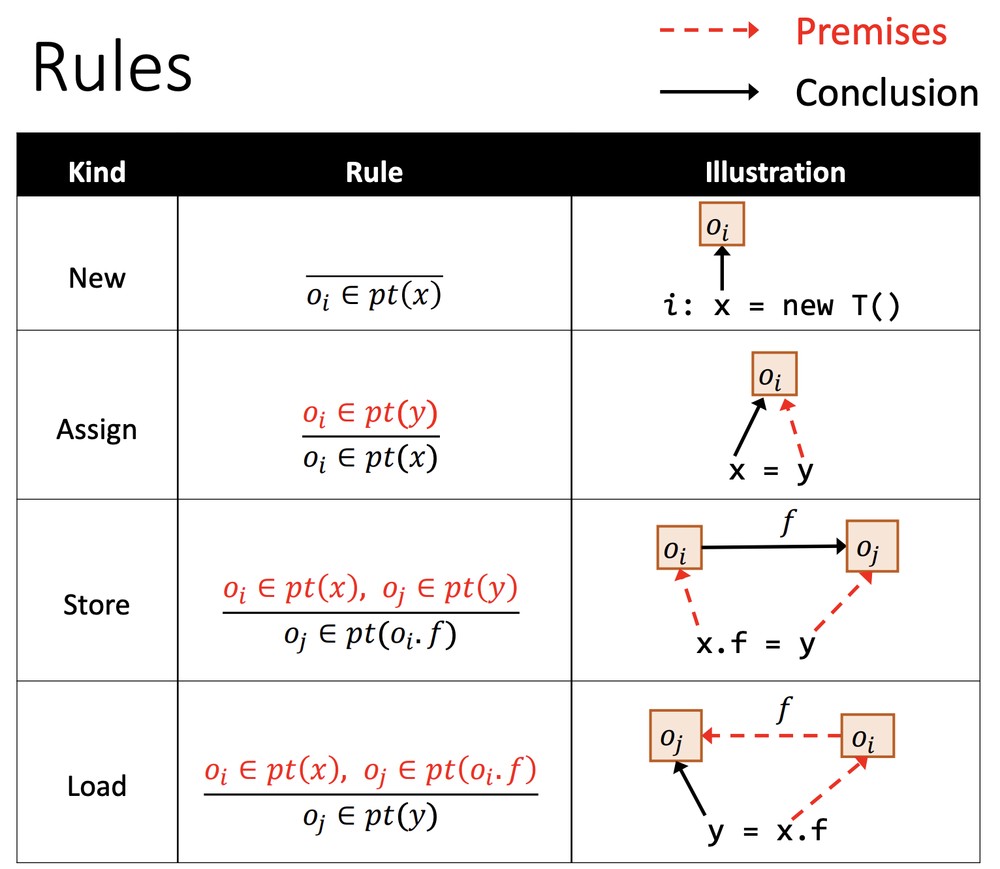

Pointer Analysis: Rules
首先介绍需要用到的定义：
Variables: x,y∈V
Fields: f,g∈F
Objects: oi,oj∈O
Instance fields: oi.f,oi.g∈O×F
Pointers: Pointer=V∪(O×F)
Pointers-to relations: pt:Pointer→P(O)
其中：
P(O) 表示 O 的幂集
pt(p) 表示指针 p 指向的对象集合
规则：
| Kind |
Statement |
Rule |
| New |
i:x=newT() |
oi∈pt(x) |
| Assign |
x=y |
oi∈pt(x)oi∈pt(y) |
| Store |
x.f=y |
oj∈pt(oi.f)oi∈pt(x),oj∈pt(y) |
| Load |
y=x.f |
oj∈pt(y)oi∈pt(x),oj∈pt(oi.f) |
注：ba 为推导符号，其中 a 是前提（premises），b 是结论（conclusion）。
采用图形的方式描述：

How to Implement Pointer Analysis
指针分析就是在指针（variables&fields）之间传播（propagate）指向关系，或者说指针分析就是在求解一系列指针的包含约束（inclusion constraints）条件。
Key to implementation: when pt(x) is changed, propagate the changed part to the related pointers of x.
我们采用一个 graph 来连接 related pointers，当 pt(x) 变化时，将 changed part 传播到 x 的后继。
Pointer Flow Graph (PFG)
程序的指针流图（Pointer Flow Analysis）是一个有向图，用来表示程序中所有对象在指针中的流向，我们定义指针流图的点和边：
-
Nodes: Pointer=V∪(O×F)
一个节点 n 表示一个指针（变量或抽象对象的域/属性）
-
Edges: Pointer×Pointer
一条边 x→y 表示指针 x 指向的对象也被指针 y 指向，即指针 x 指向的对象流向（may flow to）指针 y
🌰
假设 c 和 d 开始都指向 oi，根据上述规则可以构建 PFG。当 b 指向的对象更新时，根据 PFG 需要传递到 e 中，因此指针分析转化为求解 PFG 上传递闭包（transition closure）的问题。
指针分析的整个过程，需要在构建 PFG 和在已有 PFG 上传播指向关系这两步之间不断交替循环，这两步也是相互依赖的。

Pointer Analysis: Algorithms
Algorithm
- Solve() 为主函数，由于是流不敏感分析，所以输入 S 是程序语句的 Set，四个红框对应的是四种指针相关的语句——New、Assign、Store 和 Load；AddEdge() 为 PFG 加边函数；Propagate() 为指针传播函数。
- Worklist（WL）包含需要处理的指针的指向信息，WL⊆⟨Pointer,P(O)⟩。Worklist 中的每一项都是一个指针 n 和指向集合 pts 的对 ⟨n,pts⟩，表示 pts 需要被传播到 pt(n) 中。E.g., [⟨x,{oi}⟩,⟨y,{oj,ok}⟩,⟨oj.f,{ol}⟩…]
Handling of New and Assign
首先初始化并添加 assign 边：
- 针对所有的 New 语句，将其指向关系添加到 WL 中
- 对于所有的 Assign 语句，在 PFG 中添加一条 y→x 的边
AddEdge() 函数解释如下：
然后处理 WL 中的每一项：
- 对于 ⟨n,pts⟩，计算 pts 和 pt(n) 的差值 Δ，也就是说只将pts 中 pt(n) 没有的指向添加进来

Propagate() 函数解释如下：
Differential Propagation
Q: 为什么算法中采用的是差值传播（Differential Propagation）
Δ = pts – pt(n)
Propagate(n, Δ)
|
A: 在实际分析中，一个程序的指针数量可能非常巨大，如果将全部的 pts 传播到 pt(n) 中，会造成极大的冗余而影响效率，因此可以采用差值传播的方式避免传播和处理一些冗余的指向信息。例如 pt(n) 中已有的指向信息肯定在之前就已经传播给 n 的所有后继节点了，因此不需要再传播一次。
🌰
考虑下图的情况，在传播完 pt(a) 后需要传播 pt(b)
如果我们选择直接传播（Direct Propagation），可以发现 o1,o3 被重复传播，造成冗余。
而采用差值传播则只需要传播 o5，在实际分析中会大大减小开销。
Handling of Store and Load
- 对于 Store 语句（如 x.f=y，其中 oi∈pt(x)）添加一条 y→oi.f 的边
- 对于 Load 语句（如 y=x.f，其中 oi∈pt(x)）添加一条 oi.f→y 的边
Example
根据上述算法计算以下代码的 PFG
b = new C();
a = b;
c = new C();
c.f = a;
d = c;
c.f = d;
e = d.f;
|
- 将所有的 New 语句（line1, line3）的指向关系添加到 WL 中；
foreachi:x=newT()∈Sdoadd⟨x,{oi}⟩to WL
WL: [⟨b,{o1}⟩,⟨c,{o3}⟩]
PFG: NULL
- 对于所有的 Assign 语句（line2, line4）在 PFG 中添加边；
foreachx=y∈SdoAddEdge(y,x)
WL: [⟨b,{o1}⟩,⟨c,{o3}⟩]
PFG:
graph RL
b("b {}")-->a("a {}")
c("c {}")-->d("d {}")
- 首先处理 WL 中的元素 ⟨b,{o1}⟩
while WL is not empty doremove ⟨n,pts⟩ from WLΔ=pts−pt(n)Propagate(n,Δ)
WL: [⟨c,{o3}⟩,⟨a,{o1}⟩]
PFG:
graph RL
b("b {<font color=red>o1</font>}")-->a("a {}")
c("c {}")-->d("d {}")
- 接着处理 WL 中的元素 ⟨c,{o3}⟩
WL: [⟨a,{o1}⟩,⟨d,{o3}⟩]
PFG:
graph RL
b("b {o1}")-->a("a {}")
c("c {<font color=red>o3</font>}")-->d("d {}")
- 由于 4 中处理的指针 c 存在内存操作语句（line4, line6），所以需要更新 c 的 instance field 相关的指向关系
if n represents a variable x thenforeachoi∈Δdoforeachx.f=y∈SdoAddEdge(y,oi.f)foreachy=x.f∈SdoAddEdge(oi.f,y)
WL: [⟨a,{o1}⟩,⟨d,{o3}⟩]
PFG:
graph RL
b("b {o1}")-->a("a {}")
c("c {o3}")-->d("d {}")
a-->e("o3.f {}")
d-->e
- 处理 WL 中的元素 ⟨a,{o1}⟩
WL: [⟨d,{o3}⟩,⟨o3.f,{o1}⟩]
PFG:
graph RL
b("b {o1}")-->a("a {<font color=red>o1</font>}")
c("c {o3}")-->d("d {}")
a-->e("o3.f {}")
d-->e
- 处理 WL 中的元素 ⟨d,{o3}⟩，由于指针 d 存在内存操作语句，因此需要更新 d 的 instance field 相关的指向关系
WL: [⟨o3.f,{o1}⟩,⟨o3.f,{o3}⟩]
PFG:
graph RL
b("b {o1}")-->a("a {o1}")
c("c {o3}")-->d("d {<font color=red>o3</font>}")
a-->e("o3.f {}")
d-->e
e-->f("e {}")
- 处理 WL 中的元素 ⟨o3.f,{o1}⟩
WL: [⟨o3.f,{o3}⟩,⟨e,{o1}⟩]
PFG:
graph RL
b("b {o1}")-->a("a {o1}")
c("c {o3}")-->d("d {o3}")
a-->e("o3.f {<font color=red>o1</font>}")
d-->e
e-->f("e {}")
- 处理 WL 中的元素 ⟨o3.f,{o3}⟩
WL: [⟨e,{o1}⟩,⟨e,{o3}⟩]
PFG:
graph RL
b("b {o1}")-->a("a {o1}")
c("c {o3}")-->d("d {o3}")
a-->e("o3.f {o1, <font color=red>o3</font>}")
d-->e
e-->f("e {}")
- 最后处理 WL 中的 ⟨e,{o1}⟩,⟨e,{o3}⟩ 得到最终的 PFG
WL: []
PFG:
graph RL
b("b {o1}")-->a("a {o1}")
c("c {o3}")-->d("d {o3}")
a-->e("o3.f {o1, o3}")
d-->e
e-->f("e {<font color=red>o1, o3</font>}")
Pointer Analysis with Method Calls
过程间的指针分析需要 call graph，先前的 CHA 是不精确的，而利用 Pointer Analysis 的结果构建 call graph 更加的精确。因为 call graph 的构建过程和指针分析的过程是同步进行的，因此这种构建 call graph 的方式又叫做 on-the-fly call graph construction。
Rule: Call
Q：为什么不添加一条 x→mthis 的 PFG 边？
A：对于下面的例子，我们考虑有这条边和没有这条边的情况：
with x→mthis
without x→mthis
Interprocedural Pointer Analysis
Algorithm
AddReachable
ProcessCall
Example
利用上述算法对如下代码进行 Interprocedural Pointer Analysis，构建 Call Graph 和 PFG。
class A {
static void main() {
A a = new A();
A b = new B();
A c = b.foo(a);
}
A foo(A x) { … }
}
class B extends A {
A foo(A y) {
A r = new A();
return r;
}
}
|
分析结果：